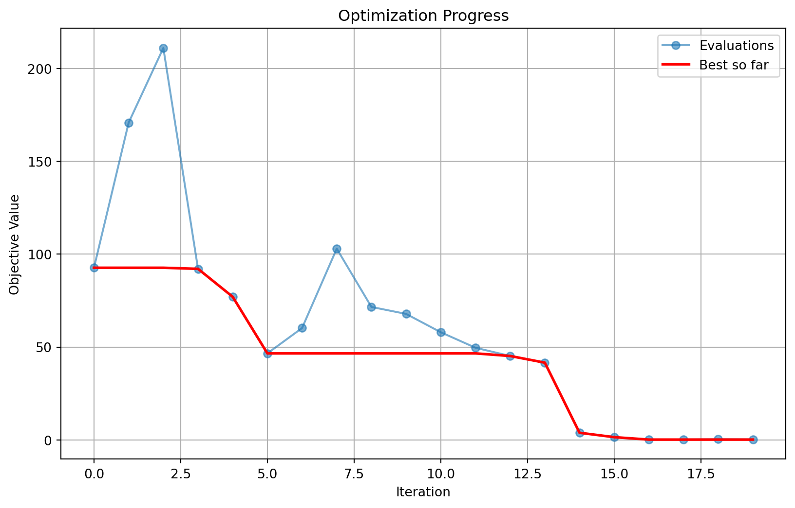
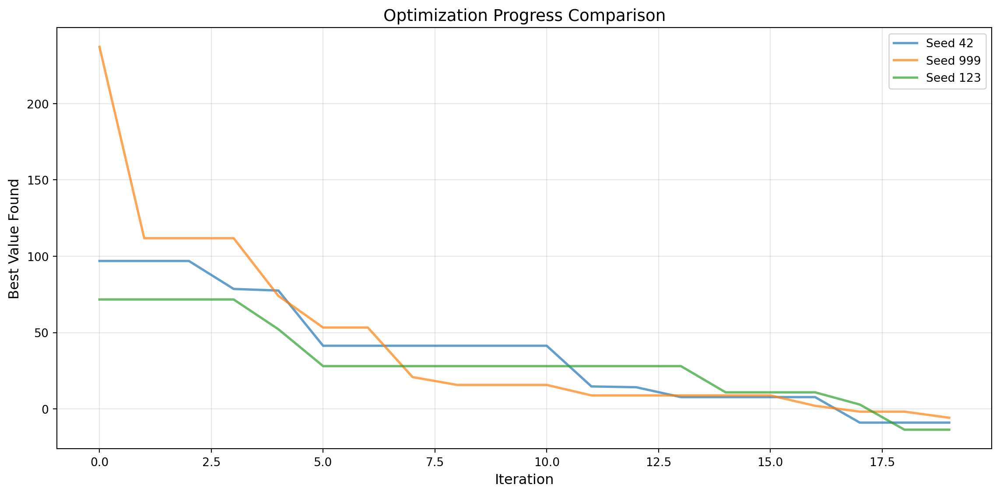

SpotOptim provides comprehensive save and load functionality for serializing optimization configurations and results. This enables distributed workflows where experiments are defined locally, executed remotely, and analyzed back on the local machine.
28.1 Key Concepts
28.1.1 Experiments vs Results
SpotOptim distinguishes between two types of saved data:
Experiment (*_exp.pkl): Configuration only, excluding the objective function and results. Used to transfer optimization setup to remote machines.
Result (*_res.pkl): Complete optimization state including configuration, all evaluations, and results. Used to save and analyze completed optimizations.
28.1.2 What Gets Saved
Component
Experiment
Result
Configuration (bounds, parameters)
✓
✓
Objective function
✗
✗
Evaluations (X, y)
✗
✓
Best solution
✗
✓
Surrogate model
Excluded*
✓
TensorBoard writer
✗
✗
*Surrogate model is excluded from experiments and automatically recreated when loaded.
28.2 Quick Start
28.2.1 Basic Save and Load
import numpy as npfrom spotoptim import SpotOptimdef sphere(X):"""Simple sphere function"""return np.sum(X**2, axis=1)# Create and configure optimizeroptimizer = SpotOptim( fun=sphere, bounds=[(-5, 5), (-5, 5)], max_iter=20, n_initial=10, seed=42)# Run optimizationresult = optimizer.optimize()print(f"Best value: {result.fun:.6f}")# Save complete resultsoptimizer.save_result(prefix="sphere_opt")# Creates: sphere_opt_res.pkl# Later: load and analyze resultsloaded_opt = SpotOptim.load_result("sphere_opt_res.pkl")print(f"Loaded best value: {loaded_opt.best_y_:.6f}")print(f"Total evaluations: {loaded_opt.counter}")
Best value: 0.000001
Experiment saved to sphere_opt_res.pkl
Result saved to sphere_opt_res.pkl
Loaded result from sphere_opt_res.pkl
Loaded best value: 0.000001
Total evaluations: 20
28.3 Distributed Workflow
The save/load functionality enables a powerful workflow for distributed optimization:
28.3.1 Step 1: Define Experiment Locally
import numpy as npfrom spotoptim import SpotOptim# Define a placeholder function (will be replaced on remote machine)def placeholder(X):"""Placeholder function - will be replaced remotely"""return np.sum(X**2, axis=1)# Define configuration locallyoptimizer = SpotOptim( fun=placeholder, # Temporary function bounds=[(-10, 10), (-10, 10), (-10, 10)], max_iter=20, n_initial=10, seed=42, verbose=True)# Save experiment configurationoptimizer.save_experiment(prefix="remote_job_001")# Creates: remote_job_001_exp.pklprint("Experiment saved. Transfer remote_job_001_exp.pkl to remote machine.")print("The objective function will be replaced on the remote machine.")
TensorBoard logging disabled
Experiment saved to remote_job_001_exp.pkl
Experiment saved. Transfer remote_job_001_exp.pkl to remote machine.
The objective function will be replaced on the remote machine.
28.3.2 Step 2: Execute on Remote Machine
from spotoptim import SpotOptimimport numpy as np# Define objective function on remote machinedef expensive_function(X):"""Expensive simulation or computation"""# Your expensive computation herereturn np.sum(X**2, axis=1) +0.1* np.sum(np.sin(10* X), axis=1)# Load experiment configurationoptimizer = SpotOptim.load_experiment("remote_job_001_exp.pkl")print("Experiment loaded successfully")# Attach objective function (must be done after loading)optimizer.fun = expensive_function# Run optimizationresult = optimizer.optimize()print(f"Optimization complete. Best value: {result.fun:.6f}")# Save resultsoptimizer.save_result(prefix="remote_job_001")# Creates: remote_job_001_res.pklprint("Results saved. Transfer remote_job_001_res.pkl back to local machine.")
Loaded experiment from remote_job_001_exp.pkl
Experiment loaded successfully
Initial best: f(x) = 46.587622
Iteration 1: f(x) = 57.963676
Iteration 2: f(x) = 49.624579
Iteration 3: New best f(x) = 45.184938
Iteration 4: New best f(x) = 41.587740
Iteration 5: New best f(x) = 3.846258
Iteration 6: New best f(x) = 1.484084
Iteration 7: New best f(x) = 0.167743
Iteration 8: f(x) = 0.210425
Iteration 9: f(x) = 0.364727
Iteration 10: f(x) = 0.271020
Optimization complete. Best value: 0.167743
Experiment saved to remote_job_001_res.pkl
Result saved to remote_job_001_res.pkl
Results saved. Transfer remote_job_001_res.pkl back to local machine.
28.3.3 Step 3: Analyze Results Locally
from spotoptim import SpotOptimimport matplotlib.pyplot as plt# Load results from remote executionoptimizer = SpotOptim.load_result("remote_job_001_res.pkl")# Access all optimization dataprint(f"Best value found: {optimizer.best_y_:.6f}")print(f"Best point: {optimizer.best_x_}")print(f"Total evaluations: {optimizer.counter}")print(f"Number of iterations: {optimizer.n_iter_}")# Analyze convergenceplt.figure(figsize=(10, 6))plt.plot(optimizer.y_, 'o-', alpha=0.6, label='Evaluations')plt.plot(range(len(optimizer.y_)), [optimizer.y_[:i+1].min() for i inrange(len(optimizer.y_))],'r-', linewidth=2, label='Best so far')plt.xlabel('Iteration')plt.ylabel('Objective Value')plt.title('Optimization Progress')plt.legend()plt.grid(True)plt.show()# Access all evaluated pointsprint(f"\nAll evaluated points shape: {optimizer.X_.shape}")print(f"All objective values shape: {optimizer.y_.shape}")
Loaded result from remote_job_001_res.pkl
Best value found: 0.167743
Best point: [ 0.17516921 0.34614876 -0.05559165]
Total evaluations: 20
Number of iterations: 10

All evaluated points shape: (20, 3)
All objective values shape: (20,)
28.4 Advanced Usage
28.4.1 Custom Filenames and Paths
import osfrom spotoptim import SpotOptimimport numpy as npdef objective(X):return np.sum(X**2, axis=1)optimizer = SpotOptim( fun=objective, bounds=[(-5, 5), (-5, 5)], max_iter=30, seed=42)# Save with custom filenameoptimizer.save_experiment( filename="custom_name.pkl", verbosity=1)# Save to specific directoryos.makedirs("experiments/batch_001", exist_ok=True)optimizer.save_experiment( prefix="exp_001", path="experiments/batch_001", verbosity=1)# Creates: experiments/batch_001/exp_001_exp.pkl
Experiment saved to custom_name.pkl
Experiment saved to experiments/batch_001/exp_001_exp.pkl
28.4.2 Overwrite Protection
from spotoptim import SpotOptimimport numpy as npdef sphere(X):return np.sum(X**2, axis=1)optimizer = SpotOptim(fun=sphere, bounds=[(-5, 5), (-5, 5)], max_iter=20)result = optimizer.optimize()# First saveoptimizer.save_result(prefix="my_result")# Try to save again - raises FileExistsError by defaulttry: optimizer.save_result(prefix="my_result")exceptFileExistsErroras e:print(f"File already exists: {e}")# Explicitly allow overwritingoptimizer.save_result(prefix="my_result", overwrite=True)print("File overwritten successfully")
Experiment saved to my_result_res.pkl
Result saved to my_result_res.pkl
Experiment saved to my_result_res.pkl
Result saved to my_result_res.pkl
Experiment saved to my_result_res.pkl
Result saved to my_result_res.pkl
File overwritten successfully
Experiment saved to checkpoint_res.pkl
Result saved to checkpoint_res.pkl
Initial optimization: 20 evaluations, best=0.000001
Loaded result from checkpoint_res.pkl
After continuation: 25 evaluations, best=0.000002
28.5 Working with Noisy Functions
Save and load preserves noise statistics for reproducible analysis:
TensorBoard logging disabled
Initial best: f(x) = 2.410456, mean best: f(x) = 2.577298
Experiment saved to noisy_opt_res.pkl
Result saved to noisy_opt_res.pkl
Loaded result from noisy_opt_res.pkl
Noise handling enabled: True
Best mean value: 2.410456
Mean values available: 10
Variance values available: 10
28.6 Working with Different Variable Types
Save and load preserves variable type information:
import numpy as npfrom spotoptim import SpotOptimdef mixed_objective(X):"""Objective with mixed variable types"""return np.sum(X**2, axis=1)# Create optimizer with mixed variable typesoptimizer = SpotOptim( fun=mixed_objective, bounds=[(-5, 5), (-5, 5), (-5, 5), (-5, 5)], var_type=["num", "int", "factor", "num"], var_name=["continuous", "integer", "categorical", "another_cont"], max_iter=20, n_initial=10, seed=42)result = optimizer.optimize()# Save resultsoptimizer.save_result(prefix="mixed_vars")# Load resultsloaded_opt = SpotOptim.load_result("mixed_vars_res.pkl")print("Variable types preserved:")print(f" var_type: {loaded_opt.var_type}")print(f" var_name: {loaded_opt.var_name}")# Verify integer variables are still integersprint(f"\nInteger variable (dim 1) values:")print(loaded_opt.X_[:5, 1]) # Should be integers
Experiment saved to mixed_vars_res.pkl
Result saved to mixed_vars_res.pkl
Loaded result from mixed_vars_res.pkl
Variable types preserved:
var_type: ['num', 'int', 'factor', 'num']
var_name: ['continuous', 'integer', 'categorical', 'another_cont']
Integer variable (dim 1) values:
[ 3. -2. -0. -3. 4.]
28.7 Best Practices
28.7.1 1. Always Re-attach the Objective Function
After loading an experiment, you must re-attach the objective function:
# Load experimentoptimizer = SpotOptim.load_experiment("experiment_exp.pkl")# REQUIRED: Re-attach functionoptimizer.fun = your_objective_function# Now you can optimizeresult = optimizer.optimize()
28.7.2 2. Use Meaningful Prefixes
Organize your experiments with descriptive prefixes:
# Good practice: descriptive prefixesoptimizer.save_experiment(prefix="sphere_d10_seed42")optimizer.save_experiment(prefix="rosenbrock_n100_lhs")optimizer.save_result(prefix="final_run_2024_11_15")# Avoid: generic namesoptimizer.save_experiment(prefix="exp1") # Not descriptiveoptimizer.save_result(prefix="result") # Hard to track
28.7.3 3. Save Experiments Before Remote Execution
# Define locallyoptimizer = SpotOptim(bounds=bounds, max_iter=20, seed=42)optimizer.save_experiment(prefix="remote_job")# Transfer file to remote machine# Execute remotely# Transfer results back# Analyze locally
import os# Create directory structureexp_dir ="experiments/batch_001"os.makedirs(exp_dir, exist_ok=True)# Save with full pathoptimizer.save_experiment( prefix="exp_001", path=exp_dir)# Load with full pathexp_file = os.path.join(exp_dir, "exp_001_exp.pkl")loaded_opt = SpotOptim.load_experiment(exp_file)
28.8 Complete Example: Multi-Machine Workflow
Here’s a complete example demonstrating the entire workflow:
Experiment saved to experiments/exp_seed42_exp.pkl
Created: experiments/exp_seed42_exp.pkl
Experiment saved to experiments/exp_seed123_exp.pkl
Created: experiments/exp_seed123_exp.pkl
Experiment saved to experiments/exp_seed999_exp.pkl
Created: experiments/exp_seed999_exp.pkl
All experiments created. Transfer 'experiments' folder to remote machine.
28.8.2 Remote Machine (Execution)
# run_experiments.pyimport numpy as npfrom spotoptim import SpotOptimimport osimport globdef complex_objective(X):"""Complex multimodal objective function""" term1 = np.sum(X**2, axis=1) term2 =10* np.sum(np.cos(2* np.pi * X), axis=1) term3 =0.1* np.sum(np.sin(5* np.pi * X), axis=1)return term1 - term2 + term3# Find all experiment filesexp_files = glob.glob("experiments/*_exp.pkl")print(f"Found {len(exp_files)} experiments to run")# Run each experimentfor exp_file in exp_files:print(f"\nProcessing: {exp_file}")# Load experiment optimizer = SpotOptim.load_experiment(exp_file)# Attach objective optimizer.fun = complex_objective# Run optimization result = optimizer.optimize()print(f" Best value: {result.fun:.6f}")# Save result (same prefix, different suffix) prefix = os.path.basename(exp_file).replace("_exp.pkl", "") optimizer.save_result( prefix=prefix, path="experiments" )print(f" Saved: experiments/{prefix}_res.pkl")print("\nAll experiments completed. Transfer results back to local machine.")
Found 3 experiments to run
Processing: experiments/exp_seed999_exp.pkl
Loaded experiment from experiments/exp_seed999_exp.pkl
Best value: -9.121049
Experiment saved to experiments/exp_seed999_res.pkl
Result saved to experiments/exp_seed999_res.pkl
Saved: experiments/exp_seed999_res.pkl
Processing: experiments/exp_seed42_exp.pkl
Loaded experiment from experiments/exp_seed42_exp.pkl
Best value: -5.807748
Experiment saved to experiments/exp_seed42_res.pkl
Result saved to experiments/exp_seed42_res.pkl
Saved: experiments/exp_seed42_res.pkl
Processing: experiments/exp_seed123_exp.pkl
Loaded experiment from experiments/exp_seed123_exp.pkl
Best value: -8.050942
Experiment saved to experiments/exp_seed123_res.pkl
Result saved to experiments/exp_seed123_res.pkl
Saved: experiments/exp_seed123_res.pkl
All experiments completed. Transfer results back to local machine.
28.8.3 Local Machine (Analysis)
# analyze_results.pyimport numpy as npfrom spotoptim import SpotOptimimport globimport matplotlib.pyplot as plt# Find all result filesresult_files = glob.glob("experiments/*_res.pkl")print(f"Found {len(result_files)} results to analyze")# Load and compare resultsresults = []for res_file in result_files: opt = SpotOptim.load_result(res_file) results.append({"file": res_file,"best_value": opt.best_y_,"best_point": opt.best_x_,"n_evals": opt.counter,"seed": opt.seed })print(f"{res_file}: best={opt.best_y_:.6f}, evals={opt.counter}")# Find best overall resultbest =min(results, key=lambda x: x["best_value"])print(f"\nBest result:")print(f" File: {best['file']}")print(f" Value: {best['best_value']:.6f}")print(f" Point: {best['best_point']}")print(f" Seed: {best['seed']}")# Plot convergence comparisonplt.figure(figsize=(12, 6))for res_file in result_files: opt = SpotOptim.load_result(res_file) seed = opt.seed cummin = [opt.y_[:i+1].min() for i inrange(len(opt.y_))] plt.plot(cummin, label=f"Seed {seed}", linewidth=2, alpha=0.7)plt.xlabel("Iteration", fontsize=12)plt.ylabel("Best Value Found", fontsize=12)plt.title("Optimization Progress Comparison", fontsize=14)plt.legend()plt.grid(True, alpha=0.3)plt.tight_layout()plt.savefig("experiments/convergence_comparison.png", dpi=150)print("\nConvergence plot saved to: experiments/convergence_comparison.png")
Found 3 results to analyze
Loaded result from experiments/exp_seed42_res.pkl
experiments/exp_seed42_res.pkl: best=-5.807748, evals=20
Loaded result from experiments/exp_seed999_res.pkl
experiments/exp_seed999_res.pkl: best=-9.121049, evals=20
Loaded result from experiments/exp_seed123_res.pkl
experiments/exp_seed123_res.pkl: best=-8.050942, evals=20
Best result:
File: experiments/exp_seed999_res.pkl
Value: -9.121049
Point: [-1.05626884 -0.90533225 0.363701 ]
Seed: 999
Loaded result from experiments/exp_seed42_res.pkl
Loaded result from experiments/exp_seed999_res.pkl
Loaded result from experiments/exp_seed123_res.pkl
Convergence plot saved to: experiments/convergence_comparison.png

28.9 Technical Details
28.9.1 Serialization Method
SpotOptim uses Python’s built-in pickle module for serialization. This provides:
Standard library: No additional dependencies required
Compatibility: Works with numpy arrays, sklearn models, scipy functions
Performance: Efficient serialization of large datasets
28.9.2 Component Reinitialization
When loading experiments, certain components are automatically recreated:
Surrogate model: Gaussian Process with default kernel
LHS sampler: Latin Hypercube Sampler with original seed
This ensures loaded experiments can continue optimization without manual configuration.
28.9.3 Excluded Components
Some components cannot be pickled and are automatically excluded:
Objective function (fun): Lambda functions and local functions cannot be reliably pickled
TensorBoard writer (tb_writer): File handles cannot be serialized
Surrogate model (experiments only): Recreated on load for experiments
28.9.4 File Format
Files are saved using pickle’s highest protocol:
withopen(filename, "wb") as handle: pickle.dump(optimizer_state, handle, protocol=pickle.HIGHEST_PROTOCOL)
28.10 Troubleshooting
28.10.1 Issue: “AttributeError: ‘SpotOptim’ object has no attribute ‘fun’”
Cause: Objective function not re-attached after loading experiment.
Solution: Always re-attach the function after loading:
Cause: Attempting to save over an existing file without overwrite=True.
Solution: Either use a different prefix or enable overwriting:
# Option 1: Use different prefixoptimizer.save_result(prefix="my_result_v2")# Option 2: Enable overwritingoptimizer.save_result(prefix="my_result", overwrite=True)
28.10.4 Issue: Results differ after loading
Cause: Random state not preserved or function behavior changed.
Solution: Ensure you’re using the same seed and function definition:
# When savingoptimizer = SpotOptim(..., seed=42) # Use fixed seed# When loading and continuingloaded_opt = SpotOptim.load_result("result_res.pkl")loaded_opt.fun = same_objective_function # Same function definition